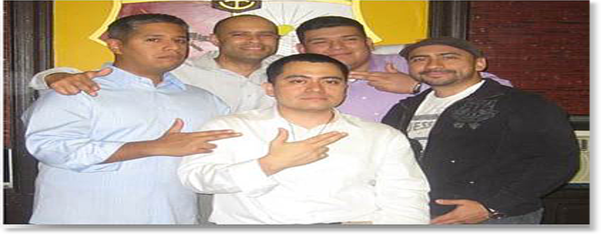

18 years of Excellence

| Name |
Year Pledged |
Chapter |
School |
| Ronald Castro |
Spring 97 |
Omicron Chapter |
NYU |
| Benjamin Irizarry |
Spring 97 |
Omicron Chapter |
NYU |
| Ariso Herrera |
Spring 97 |
Omicron Chapter |
NYU |
| Jose Gutarra |
Spring 97 |
Omicron Chapter |
NYU |
| Jimmy Tovar |
Fall 92 |
Alpha Chapter |
Cornell |
The Alpha Alpha Chapter of La Unidad Latina, Lambda Upsilon Lambda, Fraternity Inc., was founded at Stevens Institute of Technology on September 7th, 1997 by five strong, determined and proud Latino gentlemen.
Together, they worked hard to establish La Fraternidad which provide Latino men with a vehicle through which they could serve their community and strengthen the representation of Latinos in higher education. Since the chapter's inception, Alpha Alpha Chapter has worked extremely hard to address the need of the Latino community on the Stevens campus by promoting cultural awareness through series of events and community services.
Throughout the past 18 years the chapter has developed 44 ambitious and dedicated Hermanos who strive to uphold the values and goals of La Fraternidad and of the Latino Community. Although founded on September 7th, 1997, Alpha Alpha chapter did not get full recognition status as a fraternal organization by Stevens administration until October 24th, 2002.
La Unidad Latina, Lambda Upsilon Lambda Fraternity, Inc. has been at the forefront addressing the issues that affect the Latino community for the past 26 years. We, the Hermanos of the Alpha Alpha Chapter at Stevens Institute of Technology are undoubtedly well on our way to upholding such a prestigious reputation.
La Unidad Para Siempre Hermanos